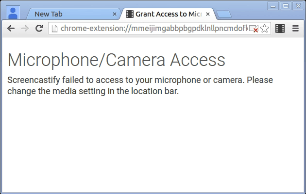

Screencastify needs access to your microphone and camera to record audio or to embed a camera feed. Please grant access to start recording.
Screencastify failed to access to your microphone or camera.
Please change the media setting in the location bar.
Then close this tab and try again.

You have successfully set up microphone and camera access. You can now close this page and start recording.